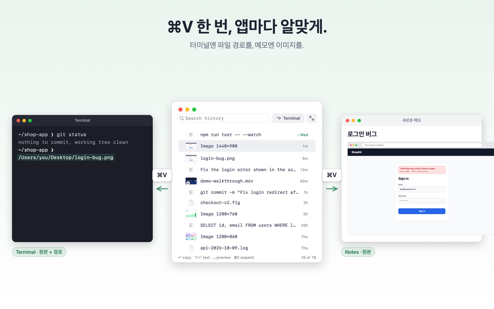
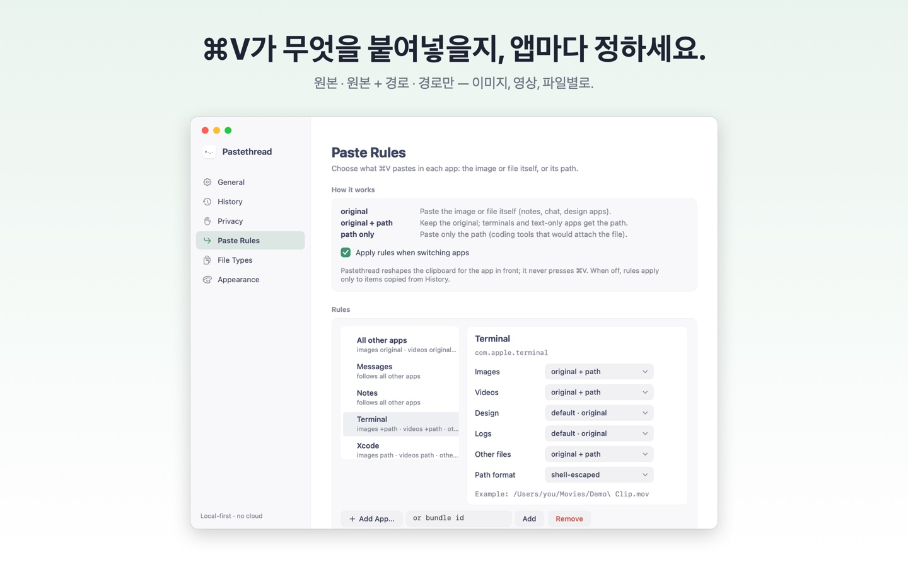
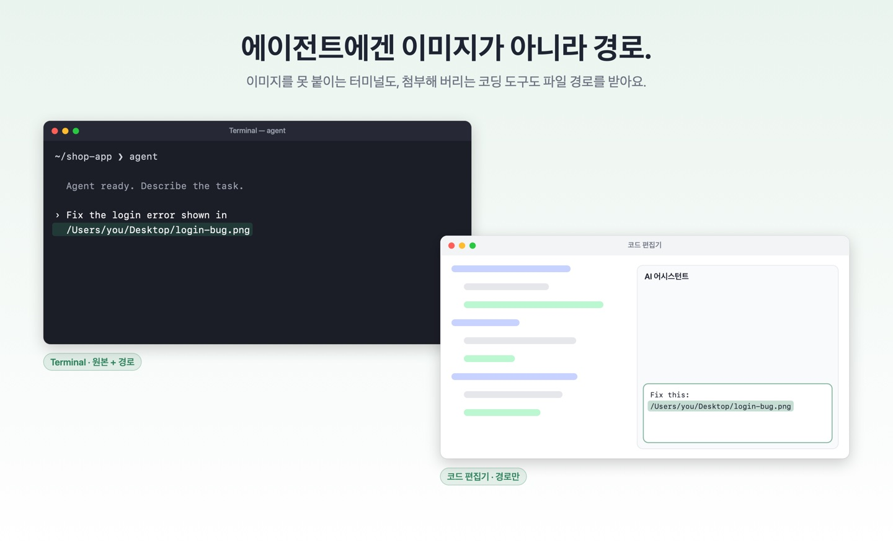
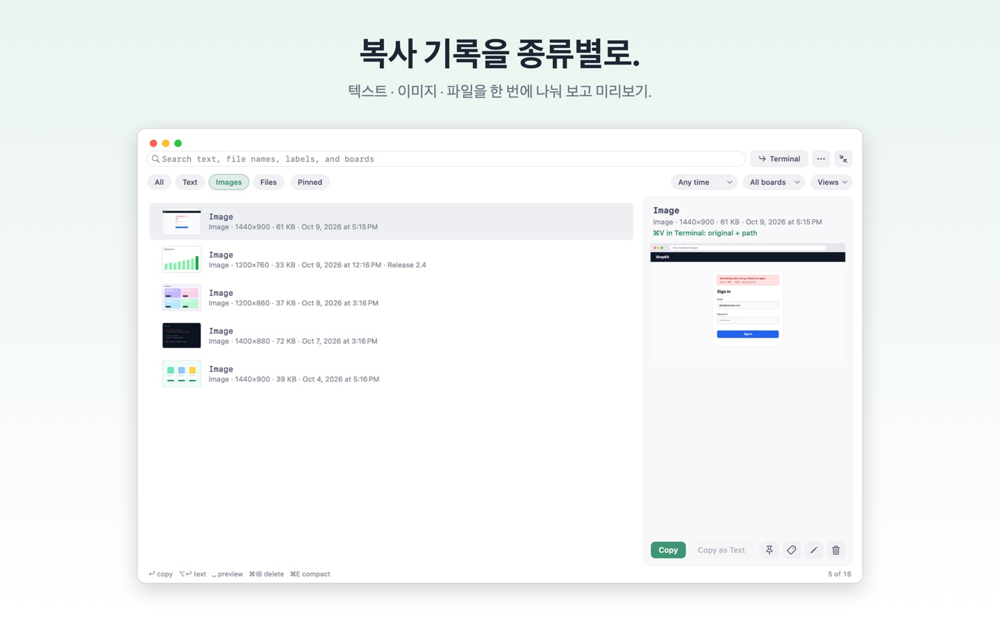
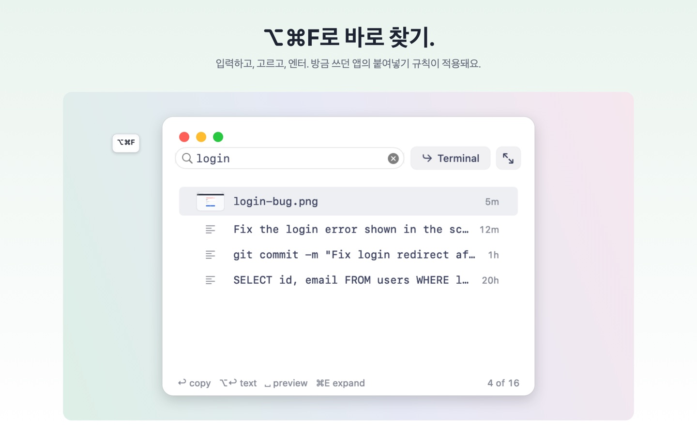
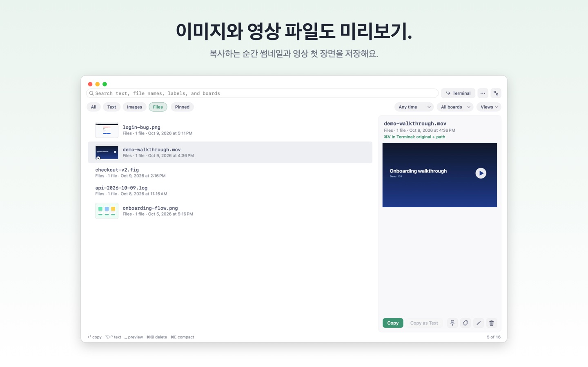

⌘V 한 번, 앱마다 알맞게.
스크린샷을 한 번 복사하고, 터미널에는 경로를, 메모에는 이미지를 붙이세요. 앱마다 한 번 정해 두면, 나머지는 평소처럼 ⌘V.
macOS 14 이상 · 유료 앱 · 지역별 가격은 App Store에서 확인 · 계정 가입 없음

설치하고, 이렇게 써 보세요
- Mac App Store에서 설치하고, 첫 실행 안내에서 Terminal 기본 설정을 켜세요.
- Control-Shift-Command-4로 스크린샷을 클립보드에 복사하세요. Terminal에서 ⌘V하면 경로가, 메모에서 ⌘V하면 이미지가 들어갑니다.
- 다른 앱도 메뉴 막대에서 규칙을 정하세요. 복사했던 것은 ⌥⌘F로 기록을 열어 다시 찾을 수 있습니다.
Terminal에서 생성된 이미지 파일을 읽을 때 macOS가 다른 앱 데이터 접근 허용을 물을 수 있습니다. 지원 FAQ 보기.
왜 필요한가요
어떤 터미널은 이미지를 아예 붙여넣지 못하고, AI 에이전트에게 필요한 건 이미지 경로뿐입니다. 코딩 도구는 경로만 필요할 때도 이미지를 첨부해 버리곤 합니다. Pastethread는 일하는 방식을 바꾸지 않고 앱마다 알맞은 것을 넣어 줍니다.
Paste Rules
원본 — 이미지나 파일 그대로 (메모, 채팅, 디자인 앱)
원본 + 경로 — 원본은 두고 파일 경로를 텍스트로 (터미널)
경로만 — 경로만 (파일을 첨부해 버리는 코딩 도구)
앱별·파일 종류별(이미지, 영상, 기타 파일, 직접 만든 확장자)로 메뉴 막대, History 창, Settings에서 정할 수 있습니다. 경로는 그대로·셸 이스케이프·따옴표 중에서 고르고, 터미널에는 기본 설정이 자동으로 적용됩니다.


종류별 복사 기록
텍스트·이미지·파일을 한 번에 나눠 보고, 이미지 파일과 영상 첫 장면을 미리 봅니다. ⌥⌘F로 어디서든 열어 입력하고, 고르고, 엔터를 누르면 방금 쓰던 앱의 붙여넣기 규칙이 적용됩니다. 선택 기능인 기기 내 텍스트 인식을 켜면 스크린샷 속 글자도 검색할 수 있습니다(기본 꺼짐). 고정·보드·저장한 보기로 자주 쓰는 것을 가까이 둘 수 있습니다.



내 Mac 안에서만
모든 데이터는 이 Mac에만 저장됩니다. 계정·클라우드·분석·추적이 없고, ⌘V를 대신 누르지 않으며 접근성 권한도 필요 없습니다.